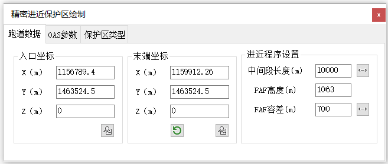

功能简介
【精密进近保护区】用于绘制精密进近（PA）保护区，支持 OAS / PAOAS 面以及 GP INOP、PA with FAF / FAP 等多种保护区种类。可按进近程序设置生成对应面，并支持参数的拾取、导入与导出。
界面预览

界面元素
| 选项卡 / 控件 | 说明 |
|---|---|
| 跑道数据（选项卡） | 入口坐标、末端坐标、进近程序设置、机型 / 轮高 / 半翼展 / RDH 等基础数据。 |
| OAS参数（选项卡） | OAS 面参数（a / b / c 等），含【参数导入】【参数导出】。 |
| 保护区类型（选项卡） | 保护区种类选择。 |
| 保护区种类（单选） | GP INOP、PAOAS 左 / 右、OAS 面、PA with FAF、PA with FAP。 |
| CAD（按钮） | 把精密进近保护区绘制到CAD窗口中。 |
操作步骤
- 命令行输入
Y05_精密进近保护区打开窗口。 - 在“跑道数据”中填入入口 / 末端坐标与机型等基础数据。
- 在“OAS参数 / 保护区类型”中设置面参数（可【参数导入】套用已有参数）。
- 在“保护区种类”中选择 GP INOP / PAOAS / OAS面 / PA with FAF / FAP。
- 点击【CAD】绘制保护区；如需复用，用【参数导出】保存参数。
提示：不同保护区种类对应不同的构造规则，绘制前请确认与进近程序类型一致。